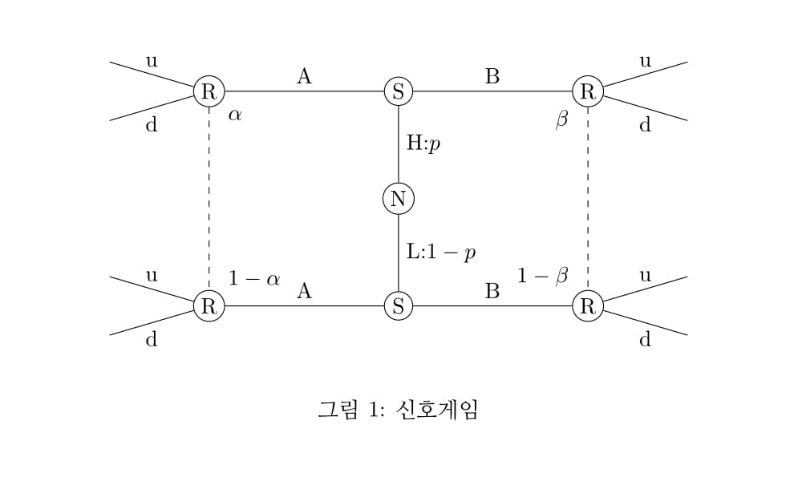

1. 신호게임 모형

신호게임은 <그림 1>과 같은 구조를 갖는 게임이다. 이 게임은 발신자(sender:S)와 수신자(receiver:R)로 구성된 순차적 게임이다. 수신자가 정보집합으로 연결되어 있기 때문에 부분게임은 존재하지 않는다. 순차적 게임이면서 불확실성이 존재하므로 균형의 개념은 완전베이지안균형이다.
발신자의 유형은 (H, L) 두 가지가 있다. 발신자(S)는 자신의 유형을 알지만 수신자(R)는 발신자의 유형을 모르고 H 유형일 확률 p, L 유형일 확률 1-p 만 알고 있다.
수신자는 발신자가 보내는 신호 또는 행동(그림에서 A, B)을 통해 발신자의 유형을 추정한다.
2. 신호게임에서 전략의 정의
발신자(S)의 전략은 유형별로 신호를 보내는 네 가지이다.
\[
\left \{ \frac{H \rightarrow A}{L \rightarrow A}\right \}
,\quad
\left \{ \frac{H \rightarrow B}{L \rightarrow B}\right \}
,\quad
\left \{ \frac{H \rightarrow A}{L \rightarrow B}\right \}
,\quad
\left \{ \frac{H \rightarrow B}{L \rightarrow A}\right \}
\]
처음 두 전략은 유형에 상관없이 같은 신호(행동)를 보내므로 통합전략(pooling strategy)이라 하고 뒤의 두 전략은 유형별로 다른 신호를 보내므로 분리전략(separating strategy)이라 한다.
수신자(R)의 전략은 발신자의 신호별로 행동방안을 정하는 네 가지이다.
\[
\left \{ \frac{A \rightarrow u}{B \rightarrow u}\right \}
,\quad
\left \{ \frac{A \rightarrow d}{B \rightarrow d}\right \}
,\quad
\left \{ \frac{A \rightarrow u}{B \rightarrow d}\right \}
,\quad
\left \{ \frac{A \rightarrow d}{B \rightarrow u}\right \}
\]
3. 믿음(확률)의 갱신
S의 유형에 대한 R의 확률(믿음) p는 S가 신호를 보냄에 따라 새롭게 갱신되어야 한다. 이때 확률 갱신의 방법은 베이즈원칙에 따른다.1
i) $\alpha$ : S가 A를 보냈을 때 S의 유형이 H라고 R이 믿을 확률2, 이는 조건부확률 $P_{r}(H|A)$로 표현된다.
\begin{eqnarray}\label{1}
\alpha = P_{r}(H|A) = \frac{P_r(H \cup A)}{P_r(A)} = \frac{P_r(H \cup A)}{P_r(H \cup A)+P_r(L \cup A)} = \frac{P_r(A|H)P_r(H)}{P_r(A|H)P_r(H)+P_r(A|L)P_r(L)}\;........[1]
\end{eqnarray}
ii) $\beta$ : S가 B를 보냈을 때 S의 유형이 H라고 R이 믿을 확률3, 이는 조건부확률 $P_{r}(H|B)$로 표현된다.
\begin{eqnarray}\label{2}
\beta = P_{r}(H|B) = \frac{P_r(H \cup B)}{P_r(B)} = \frac{P_r(H \cup B)}{P_r(H \cup B)+P_r(L \cup B)} = \frac{P_r(B|H)P_r(H)}{P_r(B|H)P_r(H)+P_r(B|L)P_r(L)}\;........[2]
\end{eqnarray}
이제 S의 각 전략별로 R의 확률이 어떻게 갱신되는가를 보면 다음과 같다.
(a) \(\left \{\frac{H \rightarrow A}{L \rightarrow A} \right \}\)
H 유형이든 L 유형이든 A를 선택하므로 $P_r(A|H) = P_r(A|L) = 1$
이를 [1]에 대입하면
\[
\alpha = P_{r}(H|A) = \frac{P_r(H)}{P_r(H)+P_r(L)} =
\frac{p}{p+1-p} = p
\]
따라서 사전확률(p)과 사후확률($\alpha$)이 같다.
S가 통합전략을 쓸 경우 R은 S의 유형에 관해 더 향상된 정보를 얻지 못한다.
따라서 R의 보수는 p에 기초하여 기대값을 구한다.
(a)전략시 S는 유형별로 보수를, R은 기대값으로 보수를 표현한다.
(b) \(\left \{ \frac{H \rightarrow B}{L \rightarrow B} \right \}\)
H 유형이든 L 유형이든 B를 선택하므로 $P_r(B|H) = P_r(B|L) = 1$
이를 [2]에 대입하면
\[
\beta = P_{r}(H|B) = \frac{P_r(H)}{P_r(H)+P_r(L)} =
\frac{p}{p+1-p} = p
\]
따라서 사전확률(p)과 사후확률($\beta$)이 같다.
S가 통합전략을 쓸 경우 R은 S의 유형에 관해 더 향상된 정보를 얻지 못한다.
따라서 R의 보수는 p에 기초하여 기대값을 구한다.
(b)전략시 S는 유형별로 보수를, R은 기대값으로 보수를 표현한다.
(c) \(\left \{ \frac{H \rightarrow A}{L \rightarrow B}\right \}\)
$P_r(A|H) = P_r(B|L) = 1$ 이므로
\[
\beta = P_{r}(H|B) = \frac{0 \times p}{0 \times p+1 \times (1-p)} = 0
\]
$\therefore P_r(L|B) = 1 - \beta = 1$
B를 봤을 때 L일 확률 1. R은 B를 보면 확실히 L로 간주한다.
\[
\alpha = P_{r}(H|A) = \frac{1 \times p}{1 \times p+0 \times (1-p)} = 1
\]
$P_r(H|A) = 1$
A를 봤을 때 H일 확률 1. R은 A를 보면 확실히 H로 간주한다.
따라서 S가 (c)의 분리전략을 쓸 경우 R은 S의 유형을 100% 파악하므로 기대값을 구할 필요가 없다.
그러므로 (c)전략시 R, S 모두 유형별로 보수를 표현한다.
(d) \(\left \{ \frac{H \rightarrow B}{L \rightarrow A}\right \}\)
$P_r(B|H) = P_r(A|L) = 1$ 이므로
\[
\beta = = P_{r}(H|B) = \frac{1 \times p}{1 \times p+0 \times (1-p)} = 1
\]
B를 봤을 때 H일 확률 1. R은 B를 보면 확실히 H로 간주한다.
\[
\alpha = P_{r}(H|A) = \frac{0 \times p}{0 \times p+1 \times (1-p)} = 0
\]
$\therefore P_r(L|A) = 1 - \alpha = 1$
A를 봤을 때 L일 확률 1. R은 A를 보면 확실히 L로 간주한다.
따라서 S가 (d)의 분리전략을 쓸 경우 R은 S의 유형을 100% 파악하므로 기대값을 구할 필요가 없다.
그러므로 (d)전략시 R, S 모두 유형별로 보수를 표현한다.
1. 그래서 균형의 이름이 완전베이즈균형으로 명명된 것이다.
2. R이 좌측 정보집합의 위쪽에 있을 확률
3. R이 우측 정보집합의 위쪽에 있을 확률